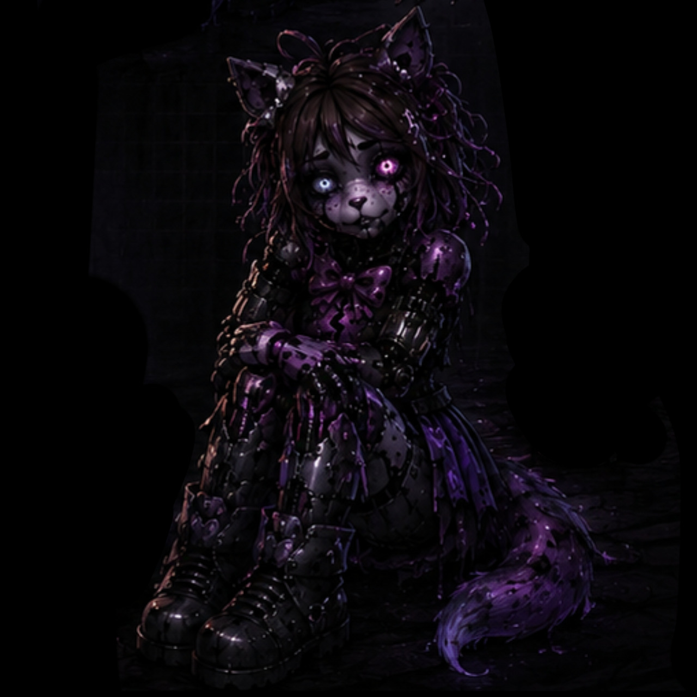
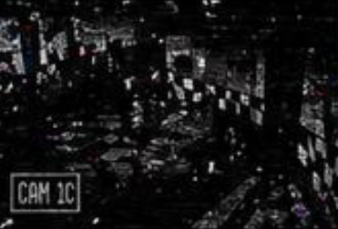
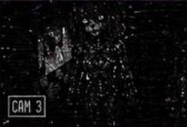
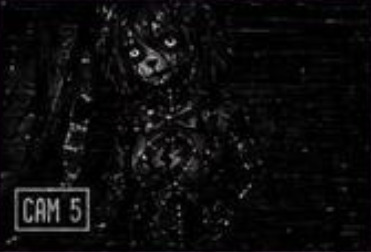
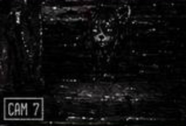

Бывший развлекательный аниматроник
Violet Echo — это прототип аниматроника, созданный для новой линейки развлечений. Она должна была быть "особенной" — аниматроником, который может эмоционально реагировать на детей, запоминать их и создавать уникальный опыт.